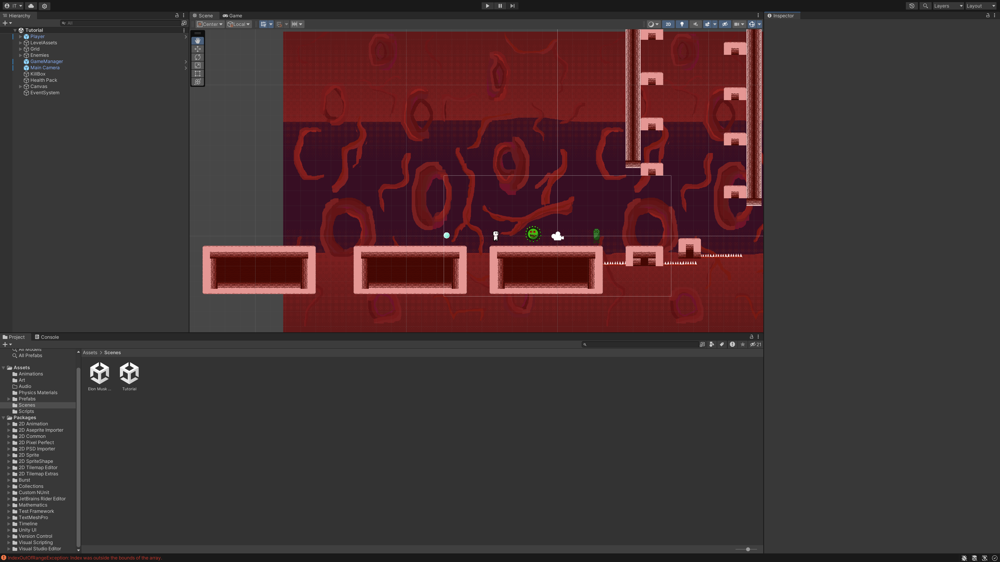

Projects
Here's a collection of things I've built over the past few years. Some turned out better than others, but each one taught me something new. I'm always working on something—these days mostly robotics and AI stuff.
Robotic Prosthetic Hand
2024 – Present
This is probably my most ambitious project so far. The idea came from wanting to understand how prosthetics actually work—I'd seen videos of people with robotic arms and was curious about the tech behind them.
The basic setup: I sewed flex sensors into a glove that I wear on my hand. When I bend my fingers, the sensors detect the movement through changes in resistance. That data goes to a Raspberry Pi Pico, which then controls servo motors attached to a 3D-printed hand. So when I move my real fingers, the prosthetic hand copies the motion.
It's not perfect—there's definitely some lag, and the grip strength could be better. But it actually works, which honestly surprised me at first. I'm currently trying to figure out how to add EMG sensors so it could potentially work with actual muscle signals instead of a glove. That part is harder than I expected.
What I learned
- How to work with microcontrollers and read analog sensor data
- PWM signals for controlling servo motors
- A lot of patience—hardware projects break constantly
- 3D printing and basic mechanical design
Tech used
Autonomous Follow Bot
8th Grade (2022)
This was my first real robotics project, back in 8th grade. The assignment was pretty open-ended—just "build something with sensors"—and I decided to make a little car that could follow me around.
The car uses ultrasonic sensors to detect objects in front of it. I wrote some basic logic so it would turn toward the nearest object (me, hopefully) and try to maintain a certain distance. It also had obstacle avoidance so it wouldn't crash into walls.
Looking back, the code was pretty messy and the hardware was held together with tape in some places. But it worked well enough to demo in class, and it's what got me interested in robotics in the first place. Sometimes simple projects end up being the most important ones.
How it works
- Ultrasonic sensors scan for nearby objects
- Control logic determines which way to turn
- Motors adjust speed to maintain following distance
- Basic obstacle avoidance prevents collisions
Tech used
Published Video Game
Summer 2023
I did a game development internship last summer, and by the end of it I'd actually made a game that people could play. It's nothing like the big games you'd buy on Steam, but it was cool to go through the whole process from start to finish.
The hardest part was probably project management—figuring out what features to cut because I was running out of time, deciding what was "good enough" to ship. Before this I'd started a bunch of game projects but never actually finished any of them, so learning to scope things down was really valuable.
I used Unity with C#, which was new to me at the time. The game itself is pretty simple—I don't want to oversell it—but the fact that it's playable and published online is something I'm proud of.
What I learned
- How to actually finish a project (harder than starting one)
- Working with Unity and C# basics
- Game design principles and playtesting
- Publishing and deployment workflows
Tech used

Other Stuff I've Worked On
Sustainability Data Analysis
For the school's sustainability club, I helped analyze energy usage data across campus buildings. Made some graphs showing natural gas and electricity emissions over time. Nothing fancy, but it was useful for the club's reports.
Python, Data VisualizationDrone Engineering
I'm the lead technician for our school's drone team. Mostly that means fixing things when they break (which is often) and helping set up for competitions. The team's ranked #1 nationally right now, which is pretty wild.
Drone Tech, Team CollaborationAI/ML Independent Study
This year I'm doing an independent study on AI and machine learning. Still in the early stages—learning the math behind neural networks and working through some tutorials. Hoping to build something real with it soon.
Python, Machine Learning